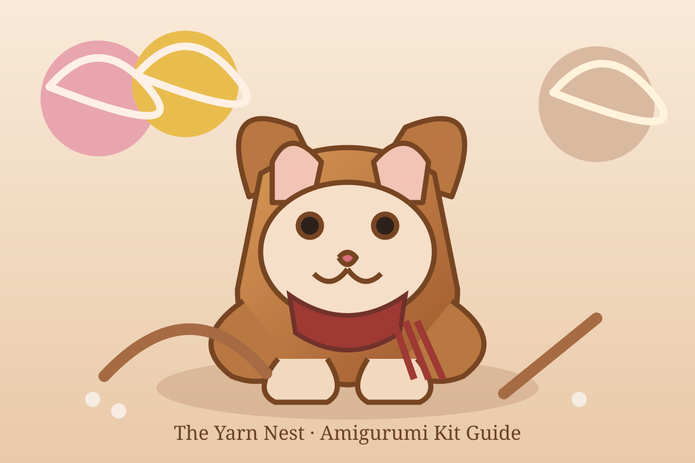

Best Amigurumi Crochet Kits: What to Look for Before You Buy

Want to make a tiny crochet cat, bear, bunny or another yarn character? An amigurumi crochet kit can make the first steps easier by bringing a pattern and selected supplies together. The right kit saves time searching for matching materials, but the word “complete” does not mean every set contains everything you need. Check the yarn, hook, pattern, notions and package list before you choose.
This buyer’s guide explains what to compare when shopping for an amigurumi crochet kit, especially if you are new to making stuffed crochet figures. We will look at beginner-friendly features, common listing details, and questions worth checking before placing an order.
What Is an Amigurumi Crochet Kit?
Amigurumi is the craft of making small stuffed figures with crochet. An amigurumi crochet kit usually groups together some combination of yarn, a crochet hook, a pattern or instructions, stuffing and finishing accessories. Some kits are designed around one animal, while others provide general supplies for making several small figures.
Kit contents vary by seller and by selected option. One listing may include all the yarn for a single character, while another may be a tool set or a pattern-only download. Always read the package contents for the exact variation you select rather than relying only on the main product photograph.
What Should a Good Amigurumi Kit Include?
1. Yarn that suits the project
Look for the yarn fiber, thickness or weight, total amount and color information. Smooth cotton or acrylic yarn can make individual stitches easier to see. Plush chenille yarn creates a soft finish, but its fuzzy texture can make stitch placement harder for a first project. Neither is automatically best: choose according to the pattern and the result you want.
Check whether the stated yarn quantity is enough for the pictured project. If the kit offers color or size variations, make sure the option selected includes the shades and amounts shown in the instructions.
2. A compatible crochet hook
The hook size should match the yarn and pattern. Amigurumi is often worked with a hook that creates a firm fabric, but the recommended size depends on the specific yarn. Check the size in millimeters and compare it with the pattern instructions. If a kit does not identify its hook size, that is a detail worth clarifying before buying.
3. Clear, usable instructions
A useful beginner kit should explain the stitches, rounds, shaping and assembly in a way that matches the project. Check whether instructions are printed, supplied as a digital file, or provided through a video. If you are still learning basic techniques, our guides to holding a crochet hook and reading a crochet pattern can help you understand the basics first.
4. Stuffing and finishing supplies
Many stuffed figures need filling, a yarn needle and sometimes stitch markers. Some kits include stuffing and other small notions; others expect you to supply them separately. Read the item list closely. For projects intended for young children, follow the maker’s age guidance and use only finishing components appropriate to the intended recipient.
5. A project that matches your experience
Look for a clear skill level and a finished size. A simple rounded animal with a small number of parts may be a more approachable first project than a character with many separate pieces and detailed shaping. A kit labelled “beginner” should still explain any special stitches or abbreviations it uses.
Amigurumi Crochet Kits for Beginners: What Matters Most?
If this is your first stuffed crochet project, prioritize clarity over the number of pieces in the box. A good beginner option should tell you exactly which yarn and hook to use, show the finished project from more than one angle, and provide instructions for joining and finishing the parts.
- One defined project: It is easier to check that the materials match one pattern.
- Readable instructions: Look for stitch abbreviations, round counts and assembly guidance.
- Visible package details: The seller should state what is included and what is not.
- Helpful listing photos: Check close-ups of the yarn, tools and finished figure.
- Recent buyer feedback: Read comments about material quality, missing pieces and instruction clarity.
How to Compare Crochet Amigurumi Kits Before Ordering
Two kits can look similar in photographs but offer different materials or instructions. Use the comparison below to focus on practical details rather than the number of accessories alone.
| What to compare | What to check | Why it matters |
|---|---|---|
| Yarn | Fiber, weight, colors and total quantity | Confirms that the material suits the pattern |
| Hook | Size in millimeters and handle style | Helps match the hook to the yarn and instructions |
| Pattern | Language, format, skill level and stitch explanations | Shows whether you can follow the project |
| Accessories | Stuffing, stitch markers, yarn needle and scissors | Reveals what you may need to provide separately |
| Finished project | Dimensions and number of included designs | Sets realistic expectations about the result |
| Seller details | Selected variation, shipping, returns and recent reviews | Helps avoid surprises at checkout |
Common Online Kit Listing Mistakes to Avoid
Product listings sometimes show tools or several yarn colors that are not included in every option. Before ordering, open the variation selector and read the package list for the exact option you intend to buy. Check whether the instructions are included, whether the yarn is supplied in full project quantities, and whether stuffing or finishing pieces are separate purchases.
Also check the delivery estimate and return conditions for your location. Reviews with customer photographs can be useful, but compare them with the current listing because sellers may update a product or its available variations.
Featured Find: A Beginner Animal Crochet Kit
If you want to make cute crochet animals, this beginner-friendly animal crochet kit is worth exploring. The listing describes an adult beginner kit with a step-by-step text tutorial. Before ordering, check the exact animal design, yarn quantity, hook, stuffing and other included accessories on the live product page.
Featured Amigurumi Kit
Beginners Animal Crochet Kit
A DIY animal crochet kit for adult beginners, described with a step-by-step text tutorial. Check the selected design and full package contents before ordering.
BUY NOWAffiliate disclosure: This article contains an affiliate link. The Yarn Nest may earn a commission from a qualifying purchase at no extra cost to you.
Is a Crochet Amigurumi Kit Better Than Buying Supplies Separately?
A kit can be convenient when you want one coordinated project and the included materials are clearly listed. Buying supplies separately gives you more control over yarn colors, fiber and tool preferences, but it takes more time to match everything to a pattern. If you are new, a clearly documented single-project kit can be a straightforward starting point. If you already have hooks and yarn at home, compare the kit contents with what you own so you do not pay for unnecessary duplicates.
Frequently Asked Questions
Are amigurumi crochet kits suitable for beginners?
Some are. Look for a beginner skill label, clear step-by-step instructions, a simple project and a complete list of included materials. Check the pattern’s stitches before choosing.
What yarn is best for an amigurumi crochet kit?
Smooth cotton or acrylic yarn can make stitches easier to see. Chenille creates a plush finish but can be harder to work with when learning. Follow the yarn and hook recommendations in the specific pattern.
Do all amigurumi kits include stuffing?
No. Contents differ between sellers and variations. Check the package list to see whether stuffing, yarn needles, stitch markers and other accessories are included.
What should I check before buying a crochet animal kit?
Check the exact selected variation, yarn quantity, hook size, pattern format, skill level, finished size, seller reviews, shipping estimate and return conditions.
Can I use my own yarn with a crochet amigurumi kit pattern?
Often you can, but choose a yarn with a compatible thickness and follow the pattern’s hook guidance. Changing yarn can affect the finished size and texture.
Choose a Kit That Fits Your First Project
The best amigurumi crochet kit is not necessarily the biggest set. It is the one with suitable yarn, a compatible hook, understandable instructions and package details you can verify before checkout. Compare the exact options, read recent feedback and choose a project that matches your current skills. With the right supplies and a little practice, you can enjoy turning simple stitches into a character of your own.
For more crochet help, browse our crochet and yarn guides, including our beginner tutorial on making a granny square.